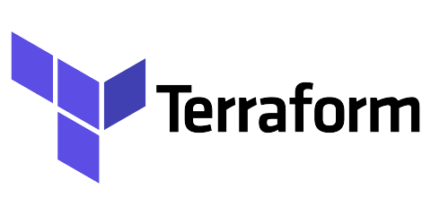

Terraform 
Description
In this workshop we will create and deploy resources using Terraform.
What you will learn
- What is Infrastructure as a code(IaC).
- What is Terraform
- How to install Terraform
- How to use Terraform to create,manage and update resources in the cloud.
- Types of variable in terraform
- Terraform Arguments such as count, depends_on, and for_each, etc.
Prerequisite
- Understanding of basic Linux commands.
- Knowledge of any cloud providers such as AWS, GCP, Azure.
Exercises